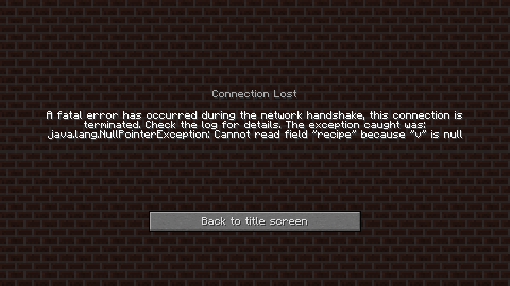

For some stupid reason, the devs of gtnh modpack is a Microsoft bootlicker.
They think the poor Minecraft devs can't feed their children or something. Anyway here's how to bypass
the anti piracy bs:
usually I'd give credit to the nice fellow who told me about it but they may ban him from subreddit or
something so I'm not giving credit, sorry.
1. First go to config/hodgepodge.cfg from serverside and change
fixNetHandlerLoginServerOfflineMode=true
to
fixNetHandlerLoginServerOfflineMode=false
do it from both server and client side.
now I ran into another issue. which is:

simply remove the Dynamic Lightning mod from your client and this problem should go away.